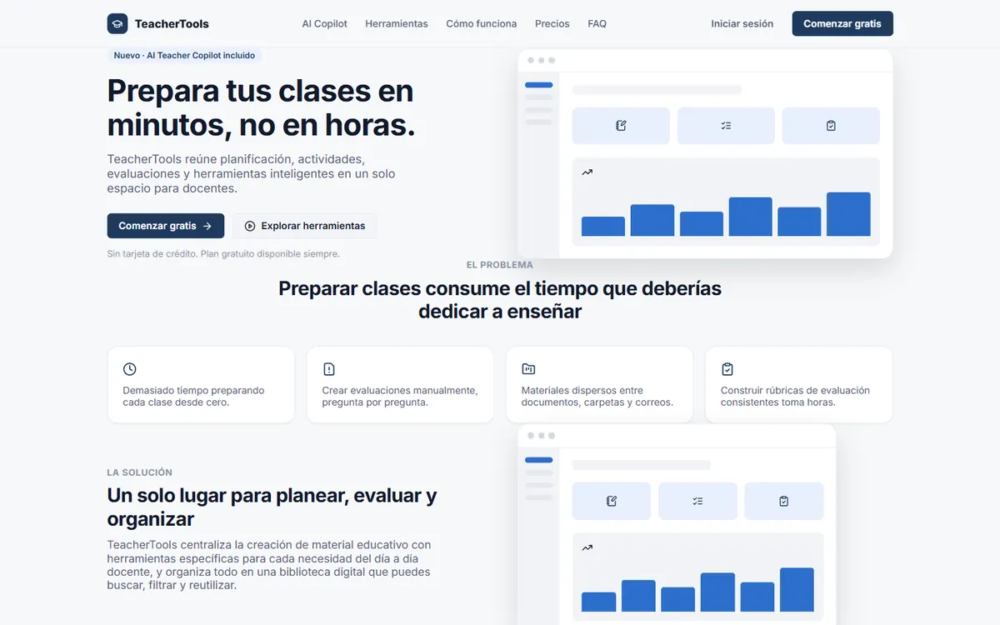

TeacherTools
Workspace para docentes: planes de clase, quizzes, rúbricas e informes, con un AI Copilot como punto de entrada.
- Problema
- Preparar clases y evaluaciones consume horas de trabajo docente, con el material disperso entre documentos.
- Solución
- Backend Express con JWT en cookie
httpOnlyy límites Free/Pro validados en servidor; IA con proveedores intercambiables y RAG sobre planes de área con pgvector y embeddings locales. 126 pruebas de integración contra PostgreSQL real.
- React 19
- Vite
- Express
- PostgreSQL
- Prisma
- pgvector
- Docker
Repositorio privado — código disponible para revisión bajo solicitud.